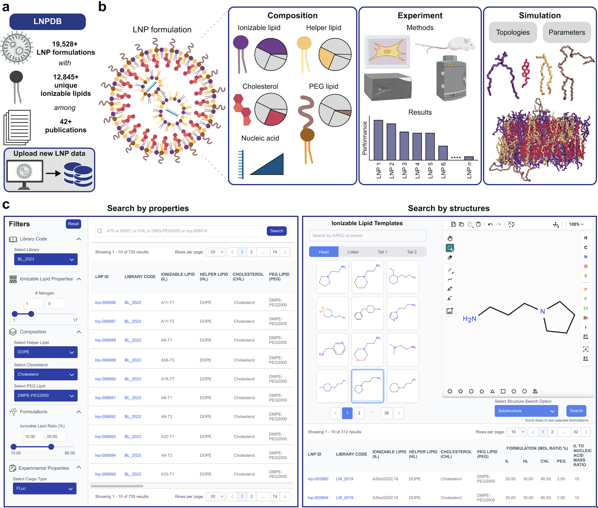
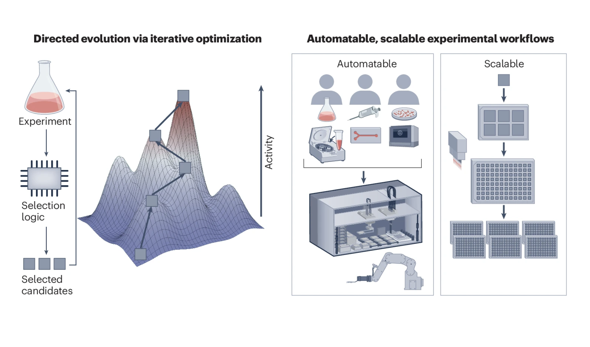
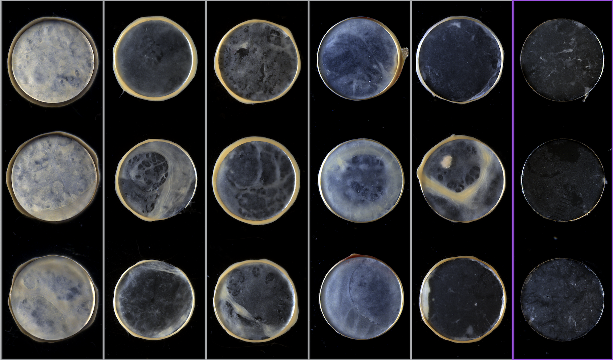
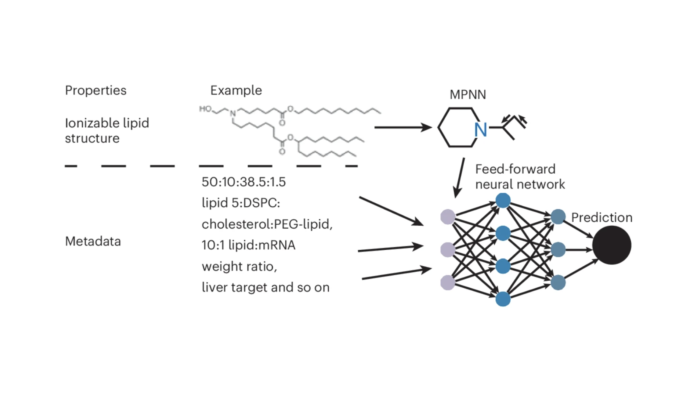
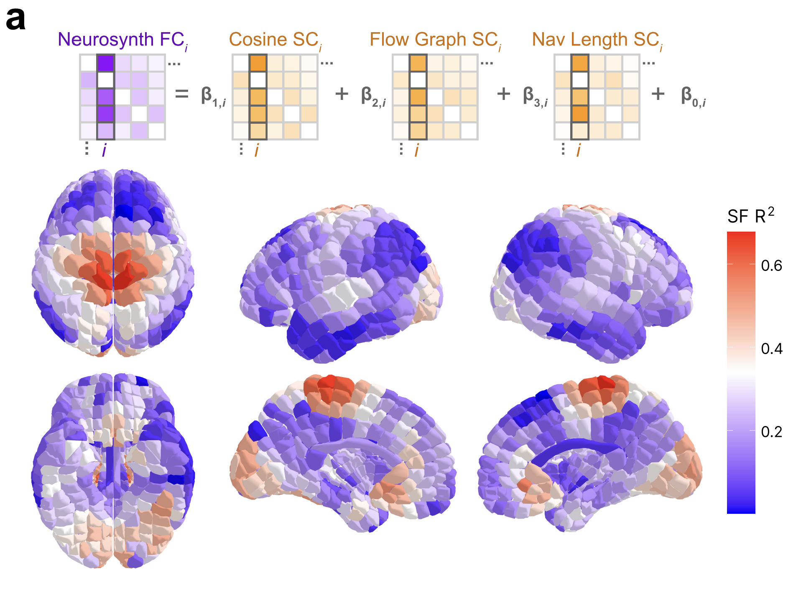
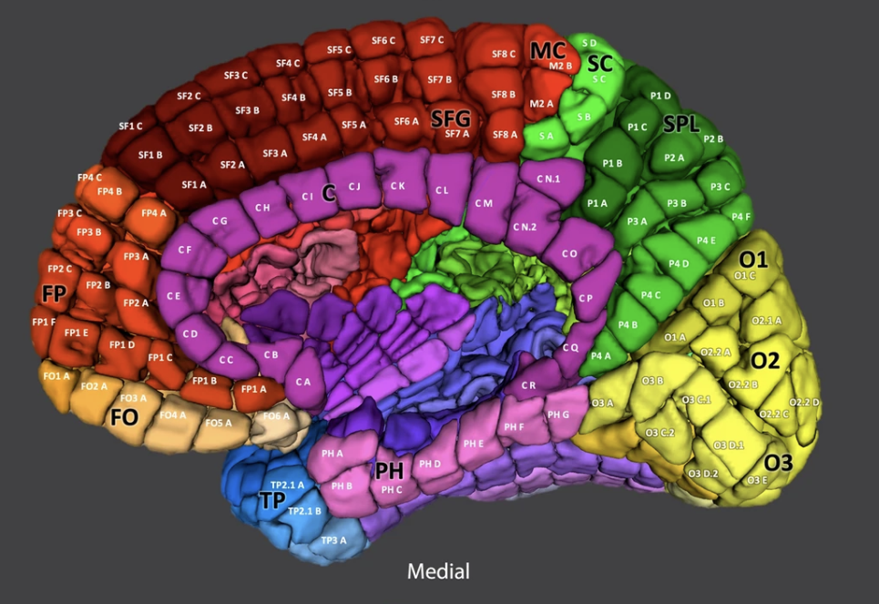

Publications
Nature Communications
(2026)Lipid Nanoparticle Database towards structure-function modeling and data-driven design for nucleic acid delivery
Collins E*, Ji J*, Kim SG*, Witten J, Kim S, Zhu R, Park P, Jung M, Park A, Manan R S, Rudra A, Jeang W J, Langer R, Anderson D G, Im W
Neurology
(2025)Multitask Language Mapping to Visualize the Spatial Configuration of Polyfunctional Language Cortex
Chishti O, Collins E, McGrath H, Zhang T, Quraishi I H, Hirsch L J, Benjamin C, Damisah E C, Zaveri H P, Spencer D D, Sivaraju A
Nature Computational Science
(2025)
Frontiers in Network Physiology
(2025)Yale Brain Atlas to interactively explore multimodal structural and functional neuroimaging data
Collins E, Chishti O, McGrath H, Obaid S, King A, Qiu E, Gabriel E, Shen X, Arora J, Papademetris X, Constable T R, Spencer D D, Zaveri H P
Advanced Materials
(2025)Antifouling Immunomodulatory Copolymer Architectures that Inhibit the Fibrosis of Implants
Jeang W J*, Wong B M*, Zhao Y, Manan R, Jiang A L, Bose S, Collins E, McMullen P, Rosenboom J, Lathwal S, Langer R, Anderson D G
Nature Biotechnology
(2024)Artificial intelligence-guided design of lipid nanoparticles for pulmonary gene therapy
Witten J*, Raji I*, Manan R S*, Beyer E, Bartlett S, Tang Y, Ebadi M, Lei J, Nguyen D, Oladimeji F, Jiang A Y, MacDonald E, Hu Y, Mughal H, Self A, Collins E, Yan Z, Engelhardt J F, Langer R, Anderson D G
Nature Communications
(2024)Mapping the structure-function relationship along macroscale gradients in the human brain
Collins E, Chishti O, Obaid S, King A, McGrath H, Shen X, Arora J, Papademetris X, Constable T R, Spencer D D, Zaveri H P
Brain Stimulation
(2024)Systematic 1 Hz Direct Electrical Stimulation for Seizure Induction: A Reliable Method for Localizing Seizure Onset Zone and Predicting Seizure Freedom
Sivaraju A, Quraishi I, Collins E, McGrath H, Ramos A, Turk-Browne N, Zaveri H P, Damisah E, Spencer D D, Hirsch L J
Scientific Reports
(2022)High-resolution cortical parcellation based on robust brain landmarks for precise localization of multimodal data
McGrath H, Zaveri H P, Collins E, Jafar T, Chishti O, Obaid S, Ksendzovsky A, Wu K, Papademetris X, Spencer D D
Management Science
(2020)The Implied Truth Effect: Attaching Warnings to a Subset of Fake News Headlines Increases Perceived Accuracy of Headlines Without Warnings
Pennycook G, Bear A, Collins E, & Rand D G